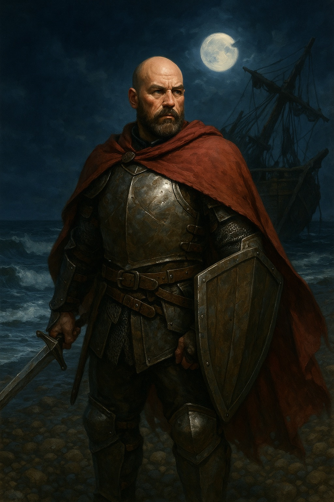

Variant Human Paladin, Oath of Vengeance. Ex-militia of the Silver Marches.
Hal Stormguard
Gender: Male Race: Variant human Class: Paladin Background: Soldier Alignment: Lawful Neutral Age: 42 years old DnD Beyond character sheet: https://www.dndbeyond.com/characters/151407767
Backstory
Born in a small border town of the Silver Marches near the Evermoor, Hal Stormguard grew up amid the constant flicker of trouble and defense. As a young man, he enlisted in the town militia, rising quickly through the ranks with a blend of discipline and a penchant for direct, earthy humor that made him both approachable and respected. He found purpose and camaraderie among his fellow soldiers—people of all races and backgrounds who shared a commitment to protecting the innocent, no matter their differences.
During his service, he witnessed firsthand the hardship of ordinary folk faced with monstrous threats—raids, giants, and the unpredictable fury of the untamed North. The passing of an old friend, a superior officer whom he deeply admired, awakened a sense of duty greater than law and order: the desire to heal as well as protect. This inspired your path as a paladin, swearing not to a deity but an oath to shield the defenseless and bring hope to the downtrodden.
Though somewhat gruff, he lives by the code “Live and Let Live”—never seeking war for its own sake, but wielding a sword and shield when others cannot stand alone. He bears the scars of war, both physical and in old habits: the clinking of armor, a battered playing card set always in his pack, and a tendency to size up every new acquaintance as either a threat… or a future friend. His crude humor covers a heart bruised but not broken by years of conflict.
Recently, trouble has stirred in the North—rumors of giants on the move, and towns shaken by mysterious attacks. He has taken up arms not for glory or vengeance, but because ordinary people need champions. He travels onward, guided by discipline, camaraderie, and a conviction that true strength lies in defending those who cannot fight for themselves.
Class Features
Paladin Features
Proficiencies (PHB, pg. 84) Athletics Persuasion
Divine Sense (PHB, pg. 84) As an action, you can detect good and evil. Until the end of your next turn, you can sense anything affected by the hallow spell or know the location of any celestial, fiend, undead within 60 ft. that is not behind total cover. You can use this feature 3 times per long rest.
Lay on Hands (PHB, pg. 84) You have a pool of healing power that can restore 35 HP per long rest. As an action, you can touch a creature to restore any number of HP remaining in the pool, or 5 HP to either cure a disease or neutralize a poison affecting the creature.
Fighting Style (PHB, pg. 84) You adopt a style of fighting as your specialty. Protection While wielding a shield and a creature you can see attacks a target other than you within 5 ft., you can use your reaction to impose disadvantage on the attack roll.
Spellcasting (PHB, pg. 84) You can cast prepared paladin spells using CHA as your spellcasting modifier (Spell DC 13, Spell Attack +5). You can use a holy symbol as a spellcasting focus.
Divine Smite (PHB, pg. 85) When you hit with a melee weapon attack, you can expend one spell slot to deal 2d8 extra radiant damage to the target plus 1d8 for each spell level higher than 1st (max 5d8) and plus 1d8 against undead or fiends (max 6d8 total).
Divine Health (PHB, pg. 85) You are immune to disease.
Sacred Oath (PHB, pg. 85) Oath of Vengeance Channel Divinity: 1 Action / Short Rest
Channel Divinity (PHB, pg. 88) You gain two Channel Divinity options: Abjure Enemy. As an action, you can choose one creature within 60 ft. of you that you can see to make a WIS saving throw (13). Fiends and undead have disadvantage on this saving throw. On failure, the creature is frightened and its speed is reduced to 0 (and it can't benefit from bonuses to speed) for 1 minute or until it takes any damage. On success, the creature’s speed is halved for 1 minute or until the creature takes any damage. Vow of Enmity. As a bonus action, you can choose a creature you can see within 10 ft. of you and gain advantage on attack rolls against it for 1 minute or until it drops to 0 HP or falls unconscious.
Channel Divinity: Abjure Enemy: 1 Action Channel Divinity: Vow of Enmity: 1 Bonus Action Oath Spells (PHB, pg. 88) You gain oath spells based on your level that are always prepared and don't count against your daily number of prepared spells.
Ability Score Improvement (PHB, pg. 85) Ability Score Improvement Constitution Score Intelligence Score Extra Attack (PHB, pg. 85) You can attack twice, instead of once, whenever you take the Attack action on your turn.
Extra Attack: 1 Action Aura of Protectionrange 10 feet (PHB, pg. 85) While you are conscious, you grant all friendly creatures (including you) within 10 ft. a +2 bonus to all saving throws.
Relentless Avenger (PHB, pg. 88) When you hit a creature with an opportunity attack, you can move up to half your speed immediately after the attack and as part of the same reaction without provoking opportunity attacks.
Relentless Avenger: Special